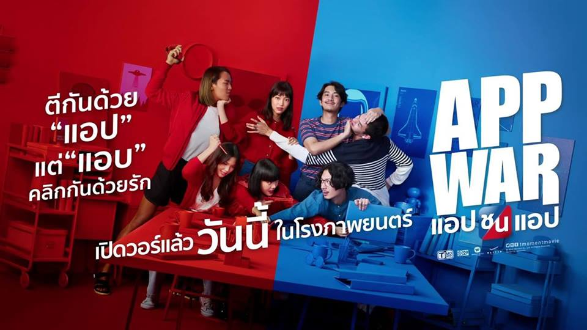

รีวิว AppWar แอปชนแอป ภาพยนตร์ที่เล่าเรื่อง Developer Startup และจิตใจคนได้อย่างดีมากๆ

ถ้าพูดถึงคำว่า Startup มันคืออาชีพในฝันของใครหลายๆ คน 90% เจ๊ง 8% กำลังดิ้นรน เหลือเพียงอีก 2% เท่านั้นที่รอด และ โคตรรวย
แต่สิ่งที่สำคัญผมคิดว่าเงินคงไม่ใช่สิ่งเดียวที่คุณเข้ามาทำสตาร์ทอัพ เหตุผลหลักๆ ของคนที่มาทำสตาร์ทอัพคือ
เราคิดว่าไอเดียของเราแม่งโคตรเจ๋ง และสามารถเปลี่ยนแปลงโลกใบนี้ สังคมนี้ ให้น่าอยู่ขึ้นได้
นี่คงเป็นส่วนหนึ่งของประโยคเปิดในภาพยนตร์เรื่องนี้ (แอบสปอยไปนิดนึง แต่คงไม่มีผลมากหรอก) สำหรับภาพยนตร์เรื่อง AppWar แอปชนแอป ที่เปิดตัวไปเมื่อต้นเดือนที่ผ่านมา จากค่าย T-moment ซึ่งคือ T (ไท เอนเตอร์เทนเมนต์) ที่แยกตัวออกจาก GTH ร่วมกับ Mono เป็น T-moment ซึ่งเรื่องนี้เป็นเรื่องที่สองของค่าย และ เป็นหนังแนว Startup และ IT บวกกับ คอมเมดี้ ดราม่า โรแมนติก เรื่องแรกๆ ของไทย และก็คงเป็นหนังเรื่องแรกในชีวิตที่ผมเข้าไปชมในโรงภาพยนตร์ถึง 2 รอบ ก่อนมารีวิวผมก็ไปดูเทลเลอร์มาอีกรอบ จะได้ดูว่าตรงไหนมันสปอยล์บ้าง อ้าวครับเริ่มเลยละกัน
บทหลักของหนังเรื่องนี้ก็เหมือนกับที่เทรเลอร์เล่ามานั่นแหละครับ ก็คือ มันมีผู้ชายiผู้หญิง คนหนึ่งอยู่ในทีมสตาร์ทอัพ คนละทีม ที่ก็ไม่ได้ประสบความสำเร็จทั้งคู่ แล้วบังเอิญมาเจอกัน ชอบอะไรเหมือนๆ กัน ทำให้เป็นที่มาของแอป 2 แอปคือ Inviter:Non Romantic Relationship กับ Amjoin:Relationship is Miracle ซึ่งสามารถไปหาโหลดใน App Store หรือ Play Store ได้นะครับ ถึงแม้จะไม่ใช่แอปจริงๆ เอาไว้โปรโมทหนังเฉยๆ เป้าหมายของแอปคือแอปที่ให้คนชอบอะไรเหมือนๆ กันมารวมกัน โดยที่ไม่ใช่แอปเดท โดยทีมงานของแต่ละแอปก็จะมี
-
Inviter
- บอม เหมือนจะเป็นหัวหน้าของทีม ใช่สิเพราะเขาเป็นพระเอก แต่ในวงการ Startup เขาเรียกเป็น Co-founder หมดรึเปล่าผมไม่แน่ใจ บอมเป็นโปรแกรมเมอร์ แสดงโดยพี่นัท ณัฏฐ์ กิจจริต เป็นโปรแกรมเมอร์ที่เก่งสัสๆ ในหนังเรื่องนี้อ่ะจะมีการพูดถึงแอพพลิเคชั่นต่างๆ เยอะนะ ไม่รู้เป็นสปอนเซอร์แฝงหรือเปล่า แต่น่าจะไม่ใช่หรอก น่าจะเป็นการพูดเกี่ยวกับวงการ Developer มากกว่า มีทั้ง Linkedin ซึ่งโปรไฟล์ของพระเอกใน LinkedIn ดีมากๆ เป็นแนวอินดี้นิดๆ ไม่นิดแหละ เยอะเลย แล้วก็ไปตกหลุมรัก จูน เฮดของอีกฝ่ายนึง
- บิ้วด์ นี่ตัวฮาของเรื่องเลย รับบทโดยพี่หรั่ง อภิวิชญ์ เรียร์ดอน ในบทเนี่ยถูกปั้นมาให้เป็นคนที่ครั่ง BNK48 สุดๆ มีรูปเต็มห้องเลย โดยน่าจะชอบ ปัน เป็นพิเศษ ซึ่งตรงนี้คงเป็นจุดขายของหนังเรื่องนี้ ไม่รู้ดีหรือไม่ดีนะ แต่ว่าแฟนคลับ BNK ไปดูก็คงยิ้มอ่ะ แต่จริงๆพี่หรั่งแกดูเป็นคนที่ไม่ได้รู้จัก BNK เท่าไหร่นะ แกเป็นมาร์เกตติ้ง ก็น่าจะเป็นคนที่หัวหมอที่สุดในทีมนี้แหละ
- ไต๋ รับบทโดยพี่ทู-สิราษฎร์ อินทรโชติ เอาจริงๆ ผมดูไม่ออกหรอกกับพระเอกอะ ต่างกันแค่เป็นคนใส่แว่น เป็น Designer พูดน้อยต่อยหนักหน่อย เป็นคนที่ดีไซด์เก่ง สวย แต่บางทีโปรแกรมเมอร์อาจจะไม่เอาด้วยก็เป็นคนที่ถูกส่งไปเป็นสปอยล์ให้กับฝั่ง Amjoin
-
Amjoin
- จูน เป็นนางเอกของเรื่อง รับบทโดยพี่จิงจิง วริศรา ยู เป็นเฮด โดยน่าจะต่างกับ Inviter ตรงที่ Head ฝั่งนี้ไม่ได้เป็นโปรแกรมเมอร์ แต่เป็น Marketing ชื่นชอบยูนิคอร์น คือ ถ้าพูดถึง Startup เนี่ย ยูนิคอร์นคือสิ่งที่ทุกคนอาจจะรู้จัก และเป็นที่ไฝ่ฝันของแต่ละคน Unicorn Startup คือ สตาร์ทอัพที่มี เงินทุนมากกว่า 1 พันล้านดอลลาร์สหรัฐนอกตลาดหลักทรัพย์ภายใน 3-5 ปี ซึ่งเดี๋ยวจะกล่าวต่อไป เป็นมาเกตติ้งสายโหดเหมือนกันแหละ แล้วก็ชอบพระเอกอยู่
- ฝ้าย กับ บัน ขอพูดรวมเลยนะครับ สองคนนี้เหมือนเป็นคนเดียวกันอ่ะ พูดแยกไม่ได้ 5555 ตัวร้ายของเรื่องป่าวเนี่ย ฝ้ายเป็นผู้หญิง แสดงโดยพี่ธิชา วงศ์ทิพย์กานนท์ บัน เป็นผู้ชาย แต่ในเรื่องแสดงเป็นตุ๊ด แสดงโดยพี่เติร์ด-ธนาภพ อยู่วิจิตร ในข้อมูลของหนังเขาบอกว่าฝ้ายเป็นโปรแกรมเมอร์ แลวบันเป็นดีไซน์เนอร์ แต่ดูจากเรื่อง เป็นโปรแกรมเมอร์ทั้งคู่นะ เป็นสายโหดเลยแหละ แต่ทักษะโปรแกรมมิ่งน้อยกว่าฝั่งนู้นเยอะมาก แอพสร้างมามี Bug ค่อนข้างเยอะ
- มายด์ เด็กฝึกงานของ Amjoin เป้าหมายของเด็กฝึกงานก็คือต้องการ Certificate ในการฝึกงาน ซึ่งจริงๆ มายด์ถูกวางบทเป็น ไม่เอาดีกว่าไม่สปอยล์ เอาว่ามายด์ถูกจ้างจาก Amjoin ให้ไปสืบใน Inviter มายด์รับบทโดยพี่อร พัศชนันท์ เจียจิรโชติ หรือ อร BNK48 จริงๆ ก็เกิดก่อนผมปีเดียวเองนะคือ 2540 จริงๆ 40 กับ 41 ก็รุ่นๆ เดียวกันแหละ เพื่อนผมเกิด 40 ตั้งเยอะ แต่บางทีคาร์แรกเตอร์ของพี่อรเป็นคนแบบมีวุฒิภาวะสูงไง(เทียบกับผม) คือไม่ได้หน้าแก่นะ น่ารักจะตาย 5555 ถ้าได้เจอก็คงเรียกพี่มากกว่า คงไม่กล้าเรียก อร เฉยๆ อ่ะ ก็ถูกวางคาเรกเตอร์ให้มายด์กับอร เหมือนๆ กัน ไม่สิหนังพยายามดึงคาเรกเตอร์ของพี่อร ออกมาให้ในหนัง อย่างความขี้อ้อน อะไรงี้ อันนี้ไม่ได้โอชิเป็นการส่วนตัวนะคับ ซึ่งมันก็น่าจะดีในมุมของแฟนคลับ BNK ที่เข้าไปดูเขา แต่ในอีกมุมมันก็อาจจะไม่สมจริงรึเปล่า ถามว่าเด็กฝึกงานอะไรจะอ่อยขนาดนั้น แต่เขาก็วางคาเรกเตอร์ ว่ามายด์ในเรื่องเป็นคนที่ไม่ถนัดอะไรพวกนี้อยู่แล้วแหละ
สตาร์ทอัพ คืออะไร
พูดถึงสตาร์ทอัพ สตาร์ทอัพคืออะไร สตาร์ทอัพคือธุรกิจที่เริ่มจากการสตาร์ท แล้วกับอัพ หรือเขาเรียกว่า Scale ซึ่งปีที่แล้วผมได้มีโอกาสไปฟังการบรรยายเกี่ยวกับ สตาร์ทอัพ จากอาจารย์สตาร์ทอัพคนหนึ่ง ทำให้รู้ว่า กูไม่อยากทำแล้ว เห้ยไม่ใช้ สตาร์ทอัพเป็นคำที่ได้ยินบ่อยมากในประเทศไทยตอนนี้ ทั้งโครงการ Startup Thailand ซึ่งมาสนับสนุนหนังเรื่องนี้ด้วยนะ แต่น่าจะมาทีหลังจากที่ถ่ายทำเสร็จแล้ว ทำให้ในหนังที่มีการพูดถึงสตาร์ทอัพ ไทยแลนด์ ก็ยังเลี่ยงไม่ใช่โลโก้ของสตาร์ทอัพ ไทยแลนด์จริงๆ ซึ่งมันเป็นโลโก้สีชมพูๆ ไปดูคลังของสตาร์ทอัพในไทยได้นะครับ ที่ www.startupthailand.org ก็สตาร์ทอัพ อย่างที่บอกสำเร็จได้ ต้องขยายได้ และก็มีโอกาสเป็นยูนิคอร์นได้ การจะขยายได้ส่วนใหญ่มันจะเป็นแพลตฟอร์มของเทคโนโลยีซะมากกว่า เพราะแบบจะขยายฐานลูกค้าไปต่างประเทศ คุณก็แค่แปลภาษา ในหนังจะแสดงให้เห็นถึงการไปขอทุนเพื่อมาทำแอพสตาร์ทอัพต่างๆ ซึ่งใช้งบประมาณพอสมควรเลย เมื่อวันศุกร์ที่ผ่านมาผมได้มีโอกาสไปงาน Digital Thailand Big Bang 2018 Regional ที่เซนทรัล เฟสติวัล หาดใหญ่ ก็ได้พบกับแอพ หรือ เว็บไซต์ สตาร์ทอัพต่างๆ ไม่สิ เขาบอกว่าเลยจุดสตาร์ทมาแล้ว หลายๆ อย่างยังอยู่ในระหว่างการพัฒนา และต้องการมานำเสนอเพื่อระดมทุนอยู่เลยนะคับ สำหรับแอพผมที่ทำ เดือนสองเดือน แล้วปล่อยเข้าสโตร์เลยเนี่ย คงไปไม่ไกลอ่ะ (แต่ผมลงทุนไม่มากนะ เจ๊งมาแล้วด้วย) กล่าวคือสตาร์ทอัพ ถ้าไม่มีเงินก็ต้องหาเงินทุน แล้วก็ทำให้เจ้าของเงินทุนพอใจ
Unicorn Startup
ยูนิคอร์นก็คือสัตว์ในเทพนิยายตัวหนึ่งใช่มั้ยหละครับ แต่ยูนิคอร์นถูกใช้เป็นตัวยูนิคอร์นนี่แหละ ในความหมายของสตาร์ทอัพ คือ สตาร์ทอัพที่มีเงินทุนมากกว่า 1000 ล้านดอลลาร์สหรัฐภายใน 3-5 ปี
โดยไม่ได้อยู่ในตลาดหลักทรัพย์นะ ผมเอามาจากเว็บธนาคารกรุงเทพ ยูนิคอร์นในประเทศไทยจริงๆ ยังไม่มีครับ เขาบอกว่าที่ใกล้เคียงที่สุดก็คือ โอมิเซะ Omise เป็นระบบแพลตฟอร์มชำระเงิน
แบบ Online Payment คือถ้าผมจะทำเว็บขายของออนไลน์ จองตั๋วอะไรซักอย่าง แล้วผมต้องการให้คนจ่ายได้หลายๆ ทางไม่ใช่แค่บัตรเครดิต อาจจะผ่าน Online Banking, Bill Payment รวมถึงพวกบัตรด้วยนั่นแหละ แล้วไม่อยากเขียนระบบเอง
Omise ช่วยคุณได้ แล้วก็เอาเปอร์เซนต์ไป พวก true, dtac หรือรู้สึกว่าองค์กรอย่าง Unicef Thailand ก็ใช้โปรแกรมนี้นะถ้าจำไม่ผิด มีการเปิดระดมทุนแบบเปิด ก็ได้งบพอสมควร ไอนี้เขาว่ามา
เอามาดู Unicorn จริงๆ เลยดีกว่าในภูมิภาคของเราก็มี Unicorn หลายตัวด้วยกันเช่น Grab ของสิงคโปร์/มาเลเซีย อันนี้ตัวใหญ่เลย ก็เห็นว่าเป็นความต้องการของนักลงทุนที่ต้องการให้ Grab เทคโอเวอร์บริการของ Uber ในเอเชียตะวันออกเฉียงใต้
Garena ของสิงคโปร์ Shopee,Airpay ของสิงคโปร์เป็นบริษัทลูกของ Garena ทั้งสิ้น , Lazada ของสิงคโปร์ แต่โดน Alibaba ซื้อไปแล้ว แล้วก็ Traveloka ของอินโดนีเซีย บางบริษัทอย่างพวก Alibaba,Xiaomi,Spotify ก็เริ่มต้นจากเป็นสตาร์ทอัพก่อน
เป็นยูนิคอร์น สตาร์ทอัพ แล้วก็เข้าสู่ตลาดหลักทรัพย์
สตาร์ทอัพในไทย

ตามนี้เลยนะครับ ไม่พูดเยอะเจ็บคอ (ไอข้างหลังนะครับ ข้างหน้าเป็นผู้สนับสนุนและนักลงทุน) ที่รู้จักอยู่ก็มีพวก Wongnai,Ookbee,Omise,Zip Event,Priceza,Liluna,inw Builk นี้เคยเจอในงานแล้ว ที่เหลือก็เป็นกำลังใจให้นะครับ ไปรอดไม่รอดค่อยดูกัน เราก็หวังจะเห็น Unicorn จริงๆในประเทศไทยบ้างซักตัว หรือไม่ก็พวก Little Pony อะไรที่เป็นชื่อเรียกระดับรองๆ ก็ได้
อ่ะ กลับมาพูดถึงหนังกันต่อหลังจากวนออกน้ำไปพอสมควรเลย หนังเรื่องนี้แสดงความรู้สึกแบบชีวิต Developer ได้ดพอสมควรเลยนะ มีการคิด วางแผน แล้วก็เสนอ หาทุนต่างๆ การทำงานต่างๆ ผมกลับมาบ้านหลังจากดูหนังรอบที่สองเนี่ย กลับมาแล้วอย่างแรกเลยคือ ตั้ง Password ให้กับคอมพิวเตอร์ครับ แล้วก็พยายามจัดห้องให้สะอาดขึ้น สวยขึ้น เหมือนในหนัง หนังมีการพูดถึงศัพท์เทคนิคพอสมควร แตไม่ได้เยอะมาก เพราะกลัวคนอื่นไม่เข้าใจสินะ แต่มันก็ประมาณหนึ่ง รู้สึกว่ามันค่อนข้างให้เกียรติวงการ Dev เลยแหละ โห เรามีหนังของเราแล้วเว้ย มันสร้างแรงบันดาลใจให้กับคนในกลุ่มก้อนนี้นะครับ มีการพูดถึง Ul/UX ก็คือ User Interface กับ User Experience และในเรื่องสตาร์ทอัพก็จะมีเรื่องการหาทุน การ pitching ซีรีส์เอ ซีรีส์บี อะไรอย่างงี้
สุดท้ายคือสิ่งที่ผมชอบที่สุดเกี่ยวกับหนังเรื่องนี้นะครับ คือไม่ได้ให้ 10/10 นะ แต่หมายถึงส่วนที่ตัวเราชอบที่สุดก็น่าจะเป็นดราม่า และก็ความเป็นคนที่อยู่ในตัวคนนั่นแหละ อาจจะมีสปอยล์บ้าง แต่หนังมันก็น่าจะออกแล้วนะครับ อาจจะพูดเล็กน้อย ผมเชื่อในความเป็นคนไทย และจิตใจของคนไทย ซึ่งในเรื่องจริงๆ หรือ ในต่างประเทศอาจจะไม่สามารถเกิดขึ้นแบบนี้ได้ มันคือสิ่งที่ฝากเอาไว้ มันคือความเข้าใจ แบบไม่ต้องอ้างเหตุผล คือหนังเรื่องนี้ผมว่าจบหักมุมจากที่คิดไว้พอสมควรนะ จากการดูท้ายๆเรื่องอ่ะ คิดว่าจะเปลียน... แต่ก็ไม่ สุดท้ายแล้ว ไม่ว่าวงการไหนๆ โดยเฉพาะวงการคอม ผมว่าเรื่องพวกนี้ มันเป็นสิ่งที่สำคัญเหนือสิ่งอื่นใดจริงๆ ผมชอบการใส่หัวใจ เข้าไปในกิจกรรมในเรื่องครับ พอแล้ว ผมรีวิวไม่เก่ง ถึงตอนนี้หนังอาจจะออกแล้ว แต่อีกซัก 3 เดือน ก็อาจจะมาล HOOQ,Primetime ยังมีอยู่มั้ยหว่า หรืออาจจะขาย DVD ถ้าคิดว่าจะมีคนสะสมอ่ะนะครับ เห้ยถ้าขายผมซื้อ และเชื่อว่าหลายคนซื้อ ยังไงก็คนที่ยังไม่ได้ดูก็รอแล้วกันนะครับ แล้วก็ช่วยกันอุดหนุนด้วย อยากให้มีหนังแบบนี้อีกนะครับ หนังที่สะท้อนมุมของอาชีพต่างๆ และแฝงด้วยตลก รัก ฮา ดราม่า และจิตใจแบบนี้นะครับ
Theethawat Savastham | 4 September 2018